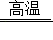
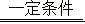
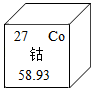

2021年北京市中考化学真题 · 选择题 第16、17、18、19、20题 · 对应解析
16．远古时期火法炼铜的原料是孔雀石【主要成分为Cu2（OH）2CO3】，组成Cu2（OH）2CO3的元素种类为（ ）
A．3种B．4种C．5种D．6种
【分析】从物质组成的元素种类进行分析。
【解答】解：Cu2（OH）2CO3中含有铜、氧、氢、碳4种元素；
故选：B。
【点评】本题考查的是基础知识，难度不大。
17．块炼铁以炭和铁矿石为原料，反应之一为Fe2O3+3CO

2Fe+3CO2，该反应中，化合价降低的元素是（ ）A．铁元素B．碳元素
C．氧元素D．铁元素和碳元素
【分析】根据单质中元素的化合价为0、在化合物中正负化合价的代数和为零，进行分析解答。
【解答】解：由Fe2O3+3CO2Fe+3CO2，该反应前后，各元素的化合价变化分别是：碳元素由+2→+4；铁元素由+3→0；反应前后，氧元素的化合价均为﹣2价，氧元素的化合价不变，则该反应中，化合价降低的元素是铁元素。
故选：A。
【点评】本题难度不大，掌握单质中元素的化合价为0、在化合物中正负化合价代数和为零并能灵活运用是正确解答本题的关键。
18．冶炼钛（Ti）的反应之一为2Mg+TiCl4

Ti+2MgCl2，该反应属于（ ）A．化合反应B．分解反应C．置换反应D．复分解反应
【分析】根据基本反应类型的判断方法来分析解答．
【解答】解：反应2Mg+TiCl4Ti+2MgCl2是由一种单质与一种化合物反应生成另一种单质与另一种化合物，属于置换反应。
故选：C。
【点评】化学反应的四种基本类型：化合、分解、置换、复分解
化合反应：由两种或两种以上的物质生成另一种物质的反应，叫做化合反应。A+B＝C
分解反应：由一种物质生成两种或两种以上的其它物质的化学反应，叫做分解反应。A＝B+C
置换反应：一种单质与另一种化合物起反应生成另一种单质和化合物的反应叫置换反应。A+BC＝AC+B
复分解反应：两种化合物相互交换离子生成另外两种化合物的反应叫复分解反应。AB+CD＝AD+CB
制作景泰蓝的釉料中常含钴元素。钴元素在元素周期表中的信息如图。回答19～20问题。

19．下列有关钴元素的说法不正确的是（ ）
A．原子序数是27B．属于非金属元素
C．元素符号是CoD．相对原子质量为58.93
【分析】元素周期表中，每种元素占据的空格中，左上角是原子序数，右上角是元素符号，中间是元素名称，下面是相对原子质量；原子中，核电荷数＝核内质子数＝核外电子数＝原子序数；除汞外，金属元素的名称都带金字旁，非金属元素的名称不带金字旁；相对原子质量单位不是g。
【解答】解：A.左上角的数值表示该元素的原子序数，因此钴元素的原子序数为27，选项说法正确；
B.由元素名称的汉字偏旁可知，钴元素属于金属元素，选项说法错误；
C.由元素周期表的信息可知，钴元素的元素符号是Co，选项说法正确；
D.由元素周期表的信息可知，下方的数值表示钴元素的相对原子质量，即相对原子质量为58.93，选项说法正确。
故选：B。
【点评】要想解答好这类题目，要理解和熟记元素周期表的特点及其应用，以及与之相关的知识。
20．钴原子的核外电子数是（ ）
A．27B．32C．59D．86
【分析】根据元素周期表的信息以及原子中，原子序数＝质子数＝核外电子数来分析。
【解答】解：由元素周期表的信息可知，钴元素的原子序数为27，因为原子中，原子序数＝质子数＝核外电子数，所以钴原子的核外电子数是27。
故选：A。
【点评】要想解答好这类题目，要理解和熟记元素周期表的特点及其应用，以及与之相关的知识。
用MgCl2溶液喷洒路面可融雪、防尘。20℃时，按下表数据配制溶液，回答21～23题。
序号 | ① | ② | ③ | ④ |
MgCl2的质量/g | 30 | 40 | 50 | 60 |
水的质量/g | 100 | 100 | 100 | 100 |
（已知：20℃时，MgCl2的溶解度为54.6g）